I build systems, and the games that come out of thinking about them.
Systems analyst in West Michigan. By day I run business platforms and automate the work around them with Python, PowerShell, SQL, and Power Automate. On my own time I've built 28 browser games and a handful of tools. Everything below runs right here, nothing to install.
Play something Get in touchFeatured
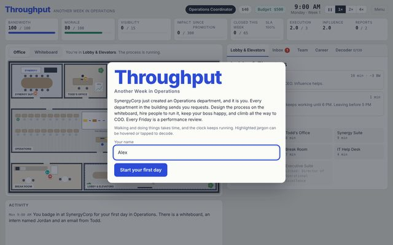
Throughput
Run an operations office: design processes, route work, and keep the numbers healthy as demand grows.
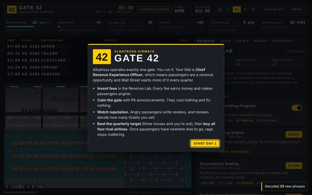
Gate 42
Manage an airline's gate and customer experience under pressure from delays, crowds, and quarterly targets.
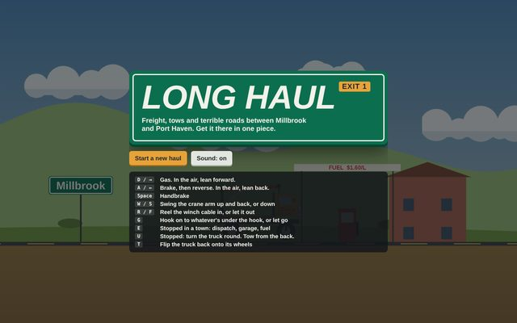
Long Haul
Drive freight and tow rigs over terrible roads with real driving physics.

Creature Maker
Shape two 3D creatures from parts, then combine them. Every piece is built from code.
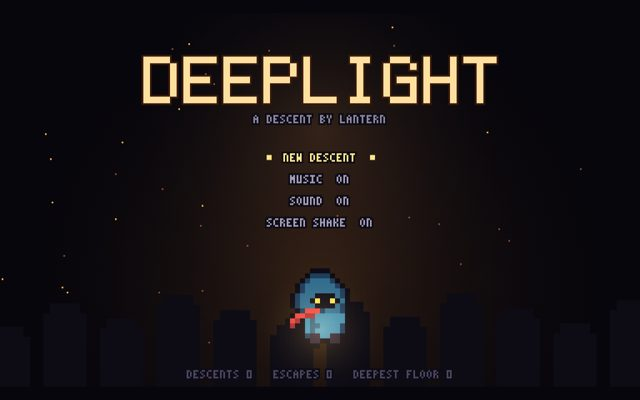
Deeplight
A pixel-art action roguelite: descend, fight, and push one floor deeper each run.
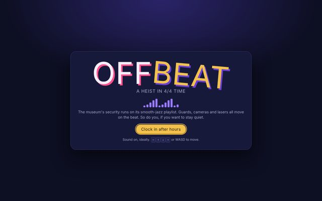
Offbeat
A rhythm stealth heist where guards, cameras, and lasers all move to the beat.
All games and tools
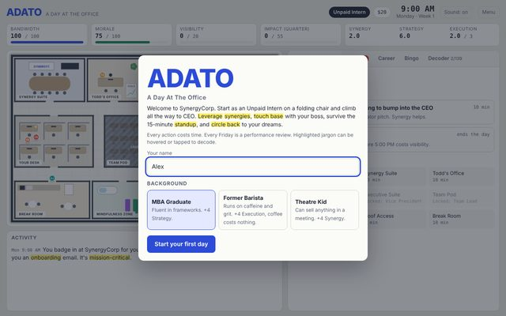
ADATO
A Day At The Office: climb from intern to CEO one workday at a time.
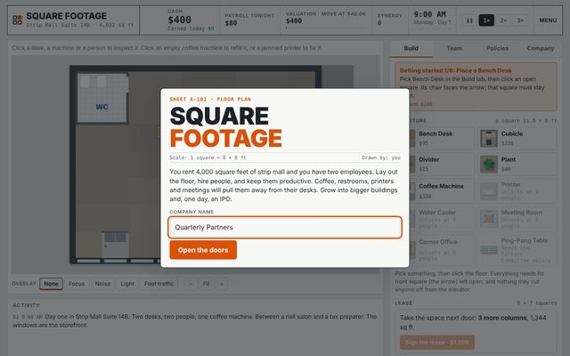
Square Footage
Lay out an office floor and keep the people in it productive.
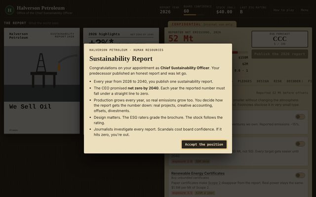
Sustainability Report
Corporate satire: run the ESG office of a fictional oil company.
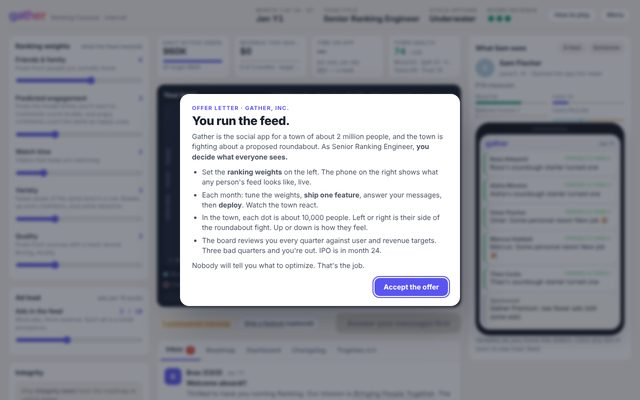
The Feed
Tune a social network's feed and live with what the algorithm does.
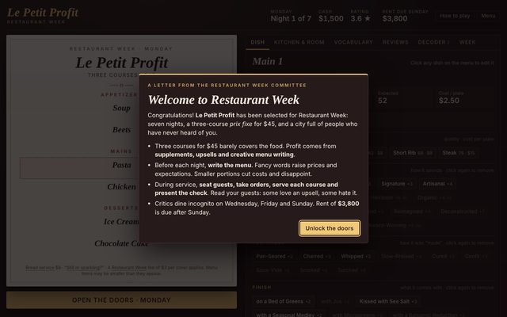
Restaurant Week
Run a small restaurant through one make-or-break week.
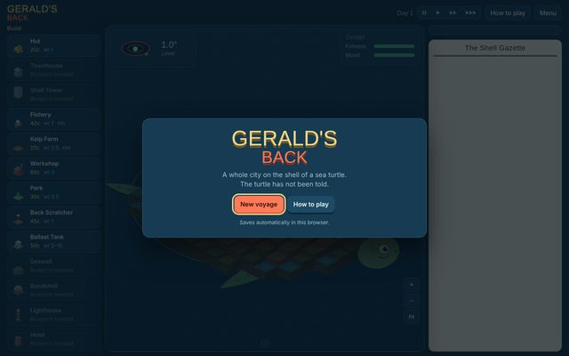
Gerald's Back
An isometric town builder.
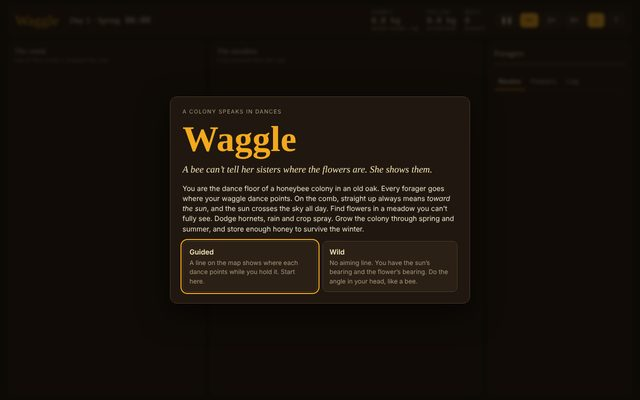
Waggle
A beehive simulation built on the real waggle dance.
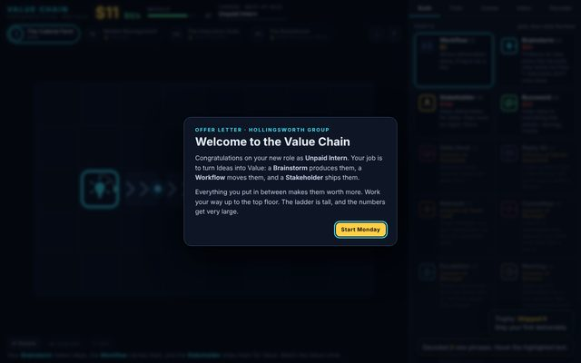
Value Chain
A corporate-ladder incremental game.
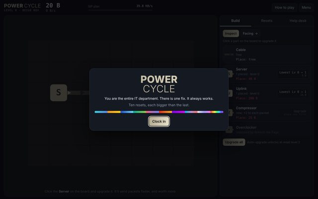
Power Cycle
A network-building incremental with ten resets.
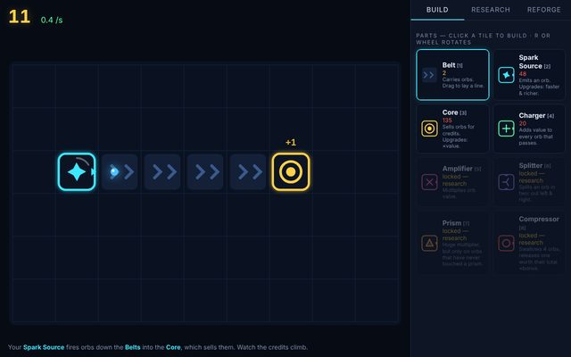
Sparkworks
Build a factory that turns sparks into power.
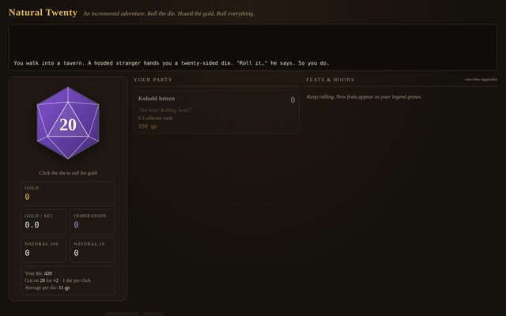
Natural Twenty
A tabletop-inspired d20 incremental game.
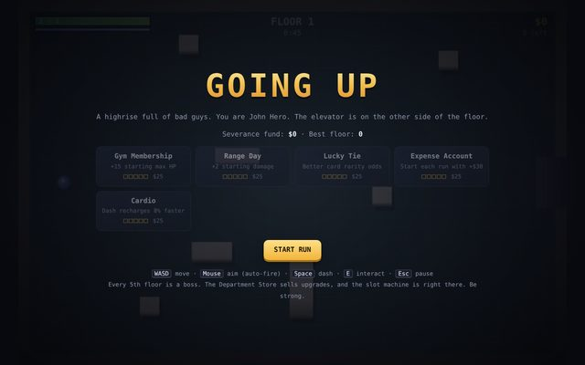
Going Up
A highrise action roguelite: fight your way up, one floor at a time.
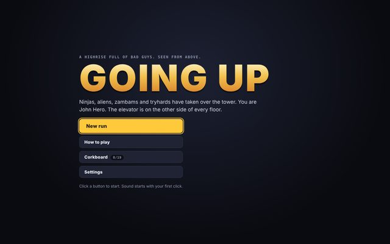
Going Up 2D
A top-down remake of Going Up.
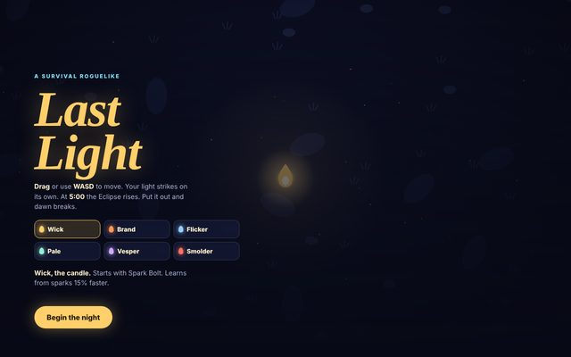
Last Light
A survival roguelike lit by a single candle.
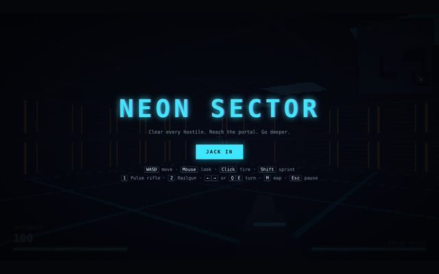
Neon Sector
A retro raycaster shooter in the style of early 3D games.
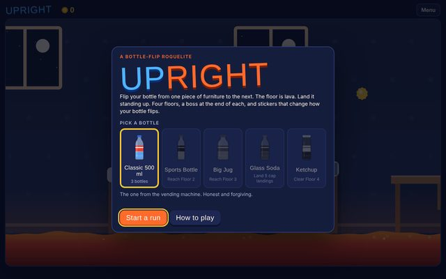
Upright
A bottle-flip roguelite.
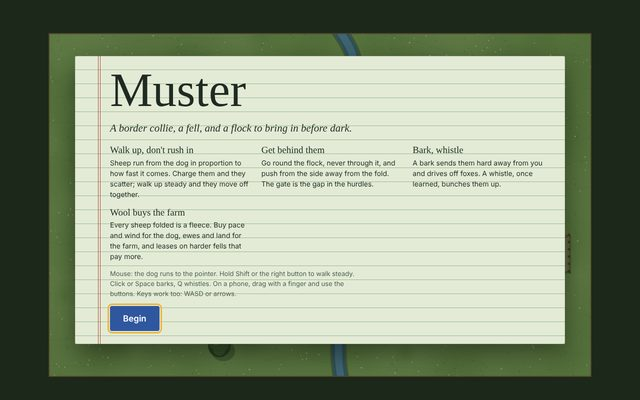
Muster
Herd a flock with a border collie before dark.
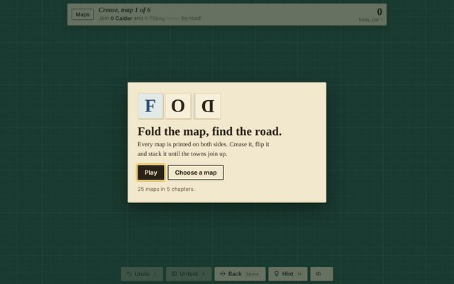
Fold
Fold paper maps until the road lines up.
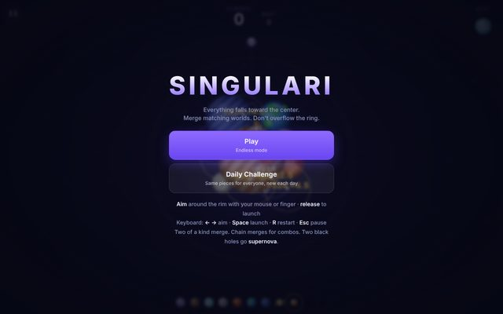
Singularity
A merge puzzle with radial gravity.
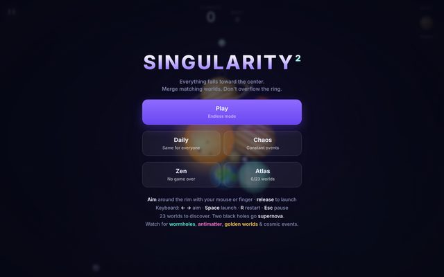
Singularity 2
The sequel to Singularity, with new modes.
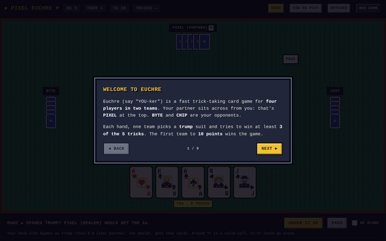
Pixel Euchre
The classic Midwest card game against computer partners.
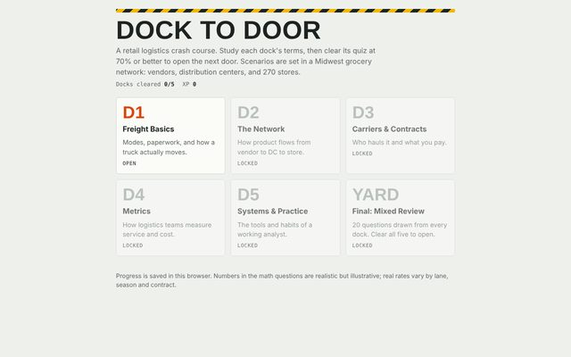
Dock to Door
A retail logistics quiz game: a crash course from freight basics to final review.
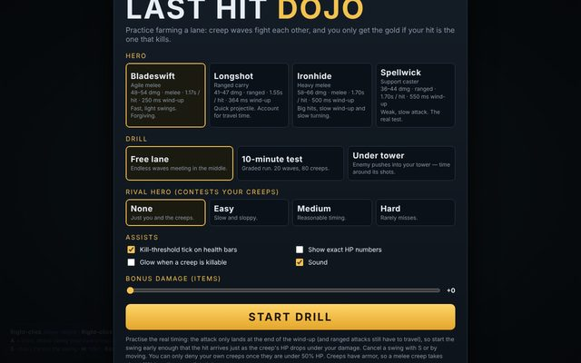
Last Hit Dojo
A last-hitting trainer for MOBA players, with drills and timed tests.
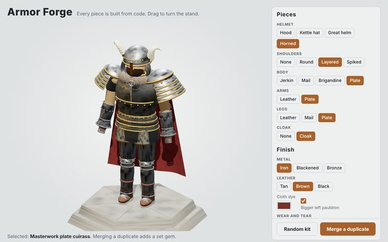
Armor Forge
Assemble 3D armor sets piece by piece. Every piece is built from code.
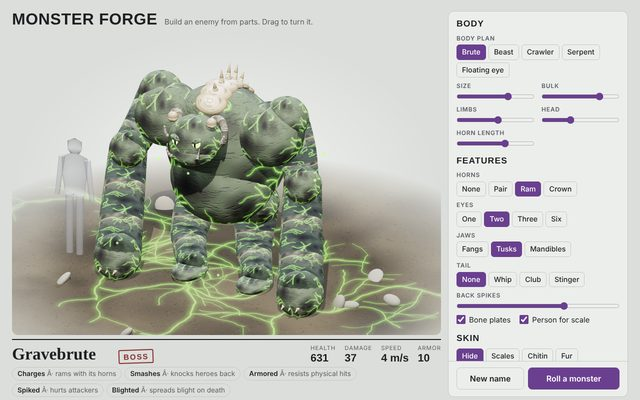
Monster Forge
Build 3D monsters from body plans, limbs, and skins.
Desktop projects
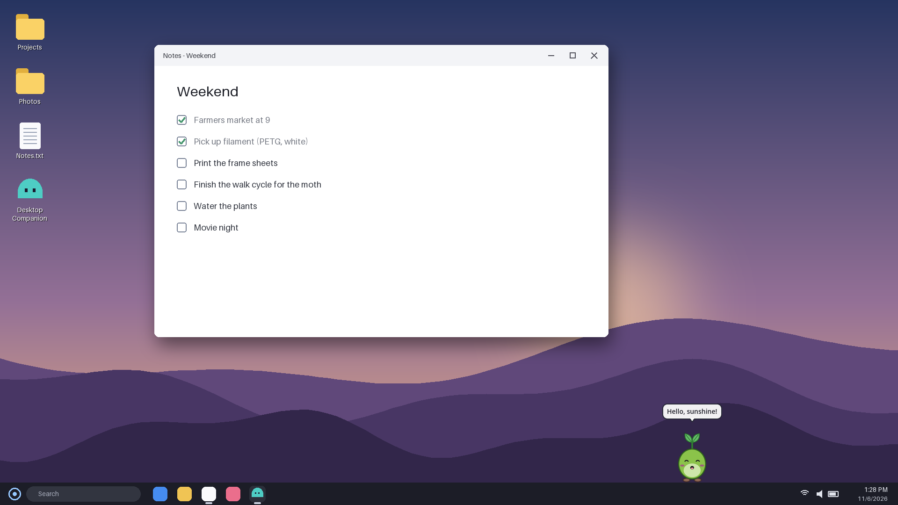
Desktop Companion
A small animated character that lives on your Windows desktop. Characters are plain image files, so an artist can add one without touching code.

Paper-to-Sprite Scan Tool
Draw animation frames on paper, scan or photograph them, and get clean game-ready sprites with no manual editing.
What I work with
Automation and scripting
Python, PowerShell, Power Automate, Office Scripts, VBA. I use AI-assisted development and test against real data.
Data
SQL (Oracle, SQLite), data migration and reconciliation, Power BI, Excel.
Games and graphics
JavaScript and HTML canvas, three.js, Godot 4. Simulation design, procedural generation, game feel.
Contact
I'm open to systems analyst, automation, and CRM roles in West Michigan or remote.